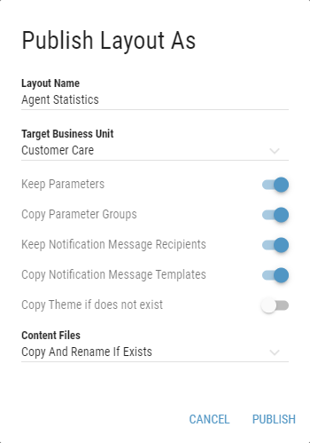

Publishing/Discarding Changes¶
Changes made while editing are only visible in edit mode in the current session and are not yet available for other users. Layout preview is automatically updated while working in the Edit mode.
Publish¶
By publishing the Layout, changes made in edit mode are applied globally. All clients displaying a Layout will reflect published changes automatically without the need to refresh or reload the page. Publish will override all changes made to the Layout by other users in the meantime. No merge is performed. Therefore it is advised, that a single Layout is not edited by more than one person at the same time. Clicking the button is followed by a confirmation prompt.
Figure 1: Publish button
Invalid changes to the Layout prohibit publishing and disable the Publish button.
Publish As¶
Publish As functionality allows user to publish the layout as a new one instead of saving changes to layout that is currently being edited. The layout can be published directly into any Business Unit and the original layout remains unaffected by changes made.
Figure 2: Publish As button
Clicking the button is followed by a dialog with additional options:
Figure 3: Publish As dialog
- Layout Name
Name of the layout.
The layout name has to be unique within the targeted Business Unit.
- Target Business Unit
The Business Unit, where the Layout should be Published. Only Business Units that are available to the user are displayed.
- Keep Parameters
Whether the calculation parameters in Layout should be kept and used in the newly published layout. If enabled, parameters of every calculation, located in the Layout are kept.
- Keep Notification Message Recipients
Whether the notification message recipients in Layout should be kept and used in the newly published layout.
These options are available only when publishing Layout into another Business Unit:
- Copy Parameter Groups
Available only when Keep Parameters is enabled
Whether parameter groups used in the layout should be copied. If a target Business Unit contains parameter group with the same name, this group is used instead of copying a new one. If the Parameter Group is copied into a different Business Unit, values are filtered based on the Business Unit’s configured filters.
- Copy Notification Message Templates
Whether notification message templates used by the Layout should be copied.
- Copy Theme If does not exist
Whether theme used by the Layout should also be copied if such theme does not already exist in the target Business Unit.
- Content Files
Whether content files, such as audio files, pdf files or images used in the Layout should be copied. Available options are:
- Do Not Copy
The content files will not be copied.
If Layout contains sources which references content from its own Business Unit, the copied Layout will be marked as invalid, unless default value is applicable. For administrators, invalid Layouts are marked red in the Layout list. Any other users are not able to see invalid Layouts in the Layout list.
- Copy And Replace If Exists
The content files will be copied. If there are already files with the same name but different size in the target Business Unit, they will be replaced.
- Copy And Rename If Exists
The content files will be copied. If there are already files with the same name but different size in the target Business Unit, copied files will be numbered (adding “(xyz)” at the end of the file name).
- Copy If Not Exists
The content files will be copied. If there are already files with the same name but different size in the target Business Unit, the content files will not be copied.
Invalid changes to the Layout prohibit publishing and disable the Publish As button.
After the layout is published as a new one, user is redirected into the edit mode of newly published layout, even if it is published into different Business Unit.
Keep Draft¶
If there are some changes that should not be published yet, but user wants to keep the changes for further layout modification at different time, these changes can be kept as a layout draft. Layout can be kept as a draft by clicking on the button, or by selecting this option in the dialog, that is displayed when closing the editor without publishing changes.
Figure 4: Keep Draft and Close button
Users displaying the Layout still see the latest published version. Only user who made the original changes (created layout draft) can later continue editing it.
If logged in user has a draft version of the layout stored, the layout is marked with * in the layout list.
Figure 5: Layout with a draft in the layout list
When layout with draft is opened for editing, user is asked whether he wants to edit existing draft or create a new draft. Also, draft details are provided in this dialog.
Figure 6: Opening a Draft
When the EDIT EXISTING DRAFT option is chosen, user continue editing the draft layout.
When CREATE NEW DRAFT option is chosen, the existing draft is discarded and the latest published version of the layout is opened.
If draft is of a layout which has never been published yet, it is slightly grayed out in the list. While hoovering over the layout name, a tooltip with the notice, that the layout has not been published yet is displayed. When opening this layout, user is taken straight to the edit mode of the existing draft.
Figure 7: Unpublished layout with a draft in the layout list
Drafts, in which no changes have been made for 14 days, are automatically deleted.
When closing an editor without publishing changes, a confirmation dialog will appear. In this dialog, user can publish, discard all changes made in the layout or keep the layout as a draft. Also, clicking on cancel button will return the user to the editor.
To keep the layout as a draft, click
Figure 8: Close Editor dialog
The draft is created even if the user leaves the editor in an unsupported way, such as closing the tab or a whole browser while editing a layout.
Discard¶
Discard action discards all changes made in Edit mode. Discarding reverts the current Layout in editor to the latest published version. Discard may not revert to the version, at which the Edit mode has been entered if another user performs a Publish in the meantime, the latest published version may be different. Clicking the button is followed by a confirmation prompt. Discarding a newly created, and not yet published, Layout deletes it.
Figure 9: Discard button
Discard action is irreversible.
If no changes are present, publishing and discarding has no effect. Therefore no prompts are displayed.